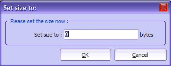
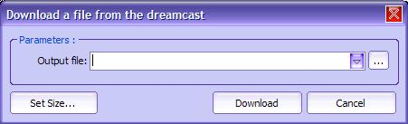
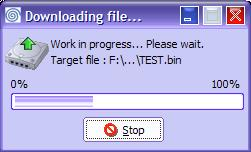
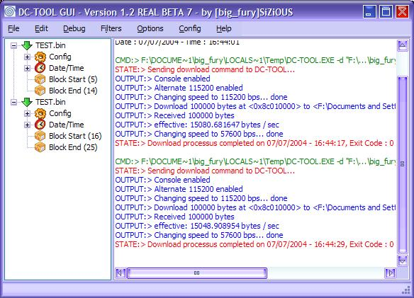

| 5. Recevoir des données de la Dreamcast |
Ce chapitre traite du download (=réception) d'un programme de la Dreamcast, soit la réception d'une zone mémoire dans un fichier.
1) Vérification de la connexion
Avant de commencer, veuillez vérifier les points suivants :
Une fois que vous avez vérifié la check list, vous pouvez tester la connexion, si vous ne l'avez pas fait.
2) Paramétrer les options de réception
a) Introduction
Avant d'envoyer un programme sur la Dreamcast, vous pouvez configurer les options d'envoi. Il peut s'agir (en règle générale) :
b) Paramétrage de la connexion
Normalement, vous avez déjà paramétré la connexion. Si ce n'est pas le cas, consultez le chapitre Première utilisation de DC-TOOL GUI pour l'utilisation de l'assistant de configuration, sinon vous pouvez consulter le chapitre Présentation des Menus.
c) Définition de l'adresse de départ
Ceci est un paramètre important. Il spécifie l'adresse de départ à télécharger, soit l'endroit ou sera positionné le pointeur ou commencera le téléchargement. Pour le spécifier, rendez vous dans le menu Edition > Définir l'adresse à... . Vous voyez apparaître une boîte de dialogue :
Vous avez un bouton Défaut pour rétablir l'adresse de base. Tapez votre adresse ici en base hexadécimale puis cliquez sur OK. Le téléchargement commencera à l'adresse spécifié ici.
d) Spécifier la taille du fichier à télécharger
Ceci est important, il spécifie la longueur de la zone mémoire à télécharger, soit la taille du fichier final, contenant les données téléchargées. Pour la spécifier, allez dans le menu Edition > Définir la taille à... .

Notez que la taille ne peut être de zéro : Cela signifie que le fichier fait 0 octets, ce qui est absurde. Entrez ici la taille voulue en octets du fichier à télécharger, puis cliquez sur OK pour valider.
3) Recevoir le fichier de la Dreamcast
Bien, maintenant vous avez spécifié tout les paramètres requis. Vous pouvez donc lancer le téléchargement.

Vous voyez une boîte de dialogue avec plusieurs contrôles. Cliquez sur le bouton à droite de la zone de texte pour sélectionner un fichier sur votre disque dur. Notez que vous pouvez changer la taille ici.
Note : Vous avez accès à un historique en cliquant sur la flèche de la zone de texte. Pour plus d'informations, consultez le chapitre Historique.
Le fichier sera maintenant téléchargé de la Dreamcast. Vous pouvez suivre son cours dans la fenêtre de progression qui s'affiche.

Vous pouvez annuler le transfert en cliquant sur Arrêter (non recommandé). Effectivement si vous annulez, vous devez redémarrer la Dreamcast (en insérant le CD DC-LOAD correspondant à votre mode de connexion) car DC-LOAD ne supporte pas l'abandon de transfert (malheuresement).
Une fois le téléchargement terminé la boîte de dialogue se ferme, vous aurez un debug log semblable à celui-ci :

Bravo! Vous avez réussi à télécharger des données de la Dreamcast !
Cette fonction n'est pas d'une énorme utilité, mais elle a le mérite d'exister !